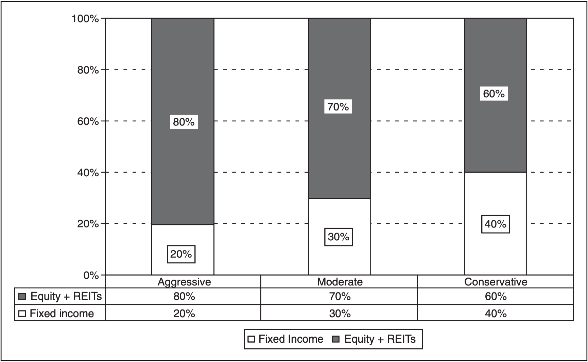
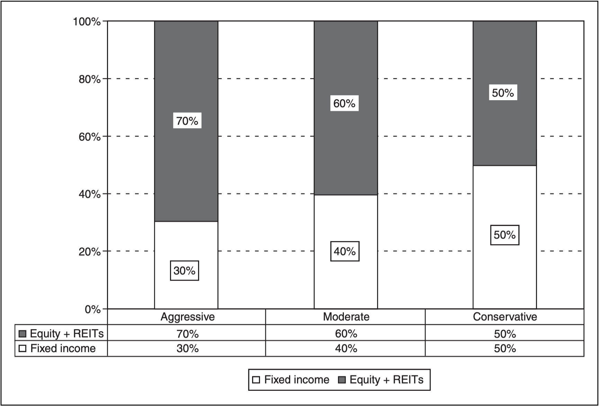
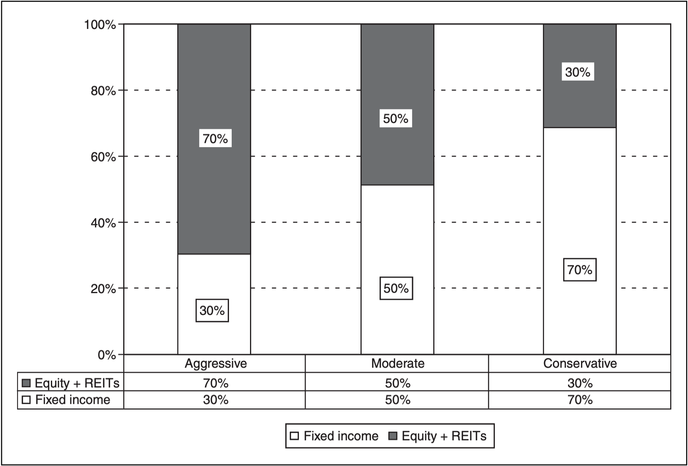
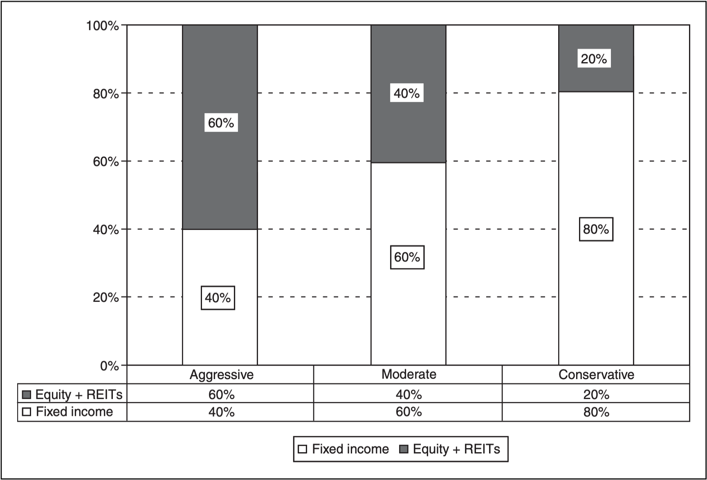
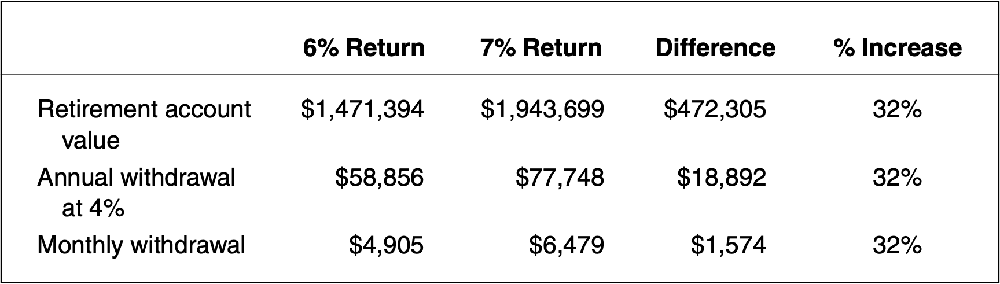

《資產配置投資策略》：投資組合管理
《資產配置投資策略》是 All About Asset Allocation 第二版。作者用淺白的例子傳達讀者資產配置與分散投資的重要性，我認為這是一本理論與實務兼具的書籍，此為第三部分「投資組合管理」之個人閱讀摘要整理。

投資前應先建立務實的市場期望
- 務實的市場期望是投資規劃的重要基礎
- 市場波動性比市場報酬率更容易預測
- 市場風險與長期期望報酬之間存在一定的關係
- 市場預測對長期投資有幫助，但對短期卻毫無助益
資產配置流程的重點之一是：投資人必須抱持務實的市場期望。除非投資人對市場報酬的期望符合經濟現實，否則投資計畫不可能成功。
《資產配置投資策略》討論兩種最基本的市場預測方法論。第一個方法是風險調整報酬模型，它主要是利用歷史價格波動性來預測報酬，目的之一是預測各種不同資產類別未來的相對績效表現。第二個方法是「由宏觀到微觀」的經濟模型，主要是利用長期的國內生產毛額 (GDP) 預測值來預測各種資產類別的報酬率。
下表是作者個人對各類資產未來 30 年的市場報酬率的估計數字：
| Asset Classes | Real Return | With 3% Inflation | Risk* |
|---|---|---|---|
| Government-backed fixed income | |||
| U.S. Treasury bills (1-year maturity) | 0.5 | 3.5 | 1.5 |
| Intermediate-term U.S. Treasury notes | 1.5 | 4.5 | 5.0 |
| Long-term U.S. Treasury bonds | 2.0 | 5.0 | 5.5 |
| GNMA mortgages | 2.0 | 5.0 | 8.0 |
| Intermediate tax-free municipal bonds (A rated) | 1.5 | 4.5 | 5.0 |
| Corporate and Emerging Market Fxed Income | |||
| Intermediate-term high-grade corporate bonds (AAA–BBB) | 2.3 | 5.3 | 5.5 |
| Long-term investment-grade bonds (AAA–BBB) | 2.8 | 5.8 | 8.5 |
| Intermediate-term high-yield corporate bonds (BB–B) | 4.0 | 7.0 | 15.0 |
| Foreign government bonds (unhedged) | 2.5 | 5.5 | 7.0 |
| U.S. Common Equity and REITs | |||
| U.S. large-cap stocks | 5.0 | 8.0 | 15.0 |
| U.S. small-cap stocks | 6.0 | 9.0 | 20.0 |
| U.S. microcap stocks | 7.0 | 10.0 | 25.0 |
| U.S. small-value stocks | 8.0 | 11.0 | 25.0 |
| REITs (real estate investment trusts) | 5.0 | 8.0 | 15.0 |
| International Equity (unhedged) | |||
| Developed countries | 5.0 | 8.0 | 17.0 |
| Developed countries, small company | 6.0 | 9.0 | 22.0 |
| Developed countries, small value companies | 8.0 | 11.0 | 27.0 |
| All emerging markets including frontier countries | 8.0 | 11.0 | 27.0 |
| *The estimate of risk is the estimated standard deviation of annual returns. |
如何建立投資組合
- 配合投資人個人需求而設計的資產配置，才是適當的資產配置
- 整體投資組合的風險不能超過個人的風險承受度
- 生命週期階段性投資法 (life-cycle method) 是個好起步
- 修正後的「根據年齡決定債券持有比重」(“your age in bonds”) 原則也很有幫助
《資產配置投資策略》根據人生的四個不同階段，提出四類不同的投資組合。這四個人生階段的詳細定義為：
- **剛起步的儲蓄者 (Early savers)**：這些投資人正處於職業生涯初期和剛成家不久的階段，他們一開始的資產不多，但卻野心勃勃。這個族群的年齡通常介於 20 至 39 歲。
- **中年財富累積者 (Midlife accumulators)**：這些投資人無論是在職業生涯或家庭方面，皆已相當有基礎。他們持續累積各種人、事、物，包括汽車、住宅、家電用品和小孩。中年財富累積者的年齡通常介於 40 至 59 歲。
- **過渡退休者 (Transitional retirees)**： 這個階段的人包括已做好退休的準備、正處於退休的過度時期，或是剛退休且日常生活還相當活躍的人。這個階段通常涵蓋 60 至 79 歲的人。
- **徹底退休者 (Mature retirees)**：徹底退休的投資人可能因自身或配偶的健康問題而不像過去那麼活躍。徹底退休者的需求和其他族群的需求非常不同。他們的需求包括醫療規劃、長期照護，甚至遺產規劃。
第一階段：剛起步的儲蓄者
剛起步的儲蓄者的資產配置區間：

剛起步的儲蓄者－中庸的基本投資組合：
| Asset Class | Percent | Sample Low-Cost Funds and Symbols (ETF) |
|---|---|---|
| U.S. equity | 40% | Vanguard Total U.S. Stock Market ETF (VTI) |
| International equity | 20% | Vanguard FTSE All World ex-U.S. ETF (VEU) |
| Real estate | 10% | Vanguard REIT ETF (VNQ) |
| Fixed income | 30% | Vanguard Total Bond Market ETF (BND) |
剛起步的儲蓄者－中庸的多元資產類別投資組合：
| Asset Class | Percent | Sample Low-Cost Funds and Symbols (ETF) |
|---|---|---|
| U.S. Equity | ||
| Core equity | 25% | Vanguard Total U.S. Stock Market ETF (VTI) |
| Small value | 10% | iShares S&P 600 Barra Value (IJS) |
| Microcap | 5% | iShares Russell Microcap Index ETF (IWC) |
| Real estate | 10% | Vanguard REIT ETF (VNQ) |
| International Equity | ||
| Pacific Rim—large | 5% | Vanguard Pacific Stock ETF (VPL) |
| Europe—large | 5% | Vanguard European Stock ETF (VGK) |
| International small-cap value | 5% | WisdomTree International Small Cap Dividend (DLS) |
| Emerging markets | 5% | Vanguard Emerging Markets Stock ETF (VWO) |
| Fixed Income | ||
| Investment-grade bonds | 20% | Vanguard Total Bond Market ETF (BND) |
| High-yield bonds | 5% | iShares iBoxx High Yield Corporate Bond (HYG) |
| Inflation-protected | 5% | iShares Barclays TIPS Bond Fund (TIP) |
族群二：中年財富累積者
中年投資人的資產配置區間：

中年財富累積者－中庸的基本投資組合：
| Asset Class | Percent | Sample Low-Cost Funds and Symbols (ETF) |
|---|---|---|
| U.S. equity | 35% | Vanguard Total U.S. Stock Market ETF (VTI) |
| International equity | 17% | Vanguard FTSE All World ex-U.S. ETF (VEU) |
| Real estate | 8% | Vanguard REIT ETF (VNQ) |
| Fixed income | 40% | Vanguard Total Bond Market ETF (BND) |
中年財富累積者－中庸的多元資產類別投資組合：
| Asset Class | Percent | Sample Low-Cost Funds and Symbols (ETF) |
|---|---|---|
| U.S. Equity | ||
| Core equity | 25% | Vanguard Total U.S. Stock Market ETF (VTI) |
| Small value | 10% | iShares S&P 600 Barra Value (IJS) |
| Microcap | 5% | iShares Russell Microcap Index ETF (IWC) |
| Real estate | 8% | Vanguard REIT ETF (VNQ) |
| International Equity | ||
| Pacific Rim—large | 4% | Vanguard Pacific Stock ETF (VPL) |
| Europe—large | 4% | Vanguard European Stock ETF (VGK) |
| International small-cap value | 5% | WisdomTree International Small Cap Dividend (DLS) |
| Emerging markets | 4% | Vanguard Emerging Markets Stock ETF (VWO) |
| Fixed Income | ||
| Investment-grade bonds | 20% | Vanguard Total Bond Market ETF (BND) |
| High-yield bonds | 10% | iShares iBoxx High Yield Corporate Bond (HYG) |
| Inflation-protected | 10% | iShares Barclays TIPS Bond Fund (TIP) |
族群三：過渡退休者
過渡退休者（包含活躍退休者）的資產配置區間：

過渡與活躍退休者－中庸的基本投資組合：
| Asset Class | Percent | Sample Low-Cost Funds and Symbols (ETF) |
|---|---|---|
| U.S. equity | 30% | Vanguard Total U.S. Stock Market ETF (VTI) |
| International equity | 15% | Vanguard FTSE All World ex-U.S. ETF (VEU) |
| Real estate | 5% | Vanguard REIT ETF (VNQ) |
| Fixed income | 48% | Vanguard Total Bond Market ETF (BND) |
| Cash equivalent | 2% | Low-cost money market fund with checking |
過渡與活躍退休者－中庸的多元資產類別投資組合：
| Asset Class | Percent | Sample Low-Cost Funds and Symbols (ETF) |
|---|---|---|
| U.S. Equity | ||
| Core equity | 18% | Vanguard Total U.S. Stock Market ETF (VTI) |
| Small value | 8% | iShares S&P 600 Barra Value (IJS) |
| Microcap | 4% | iShares Russell Microcap Index ETF (IWC) |
| Real estate | 7% | Vanguard REIT ETF (VNQ) |
| International Equity | ||
| Pacific Rim—large | 3% | Vanguard Pacific Stock ETF (VPL) |
| Europe—large | 3% | Vanguard European Stock ETF (VGK) |
| International small-cap value | 4% | WisdomTree International Small Cap Dividend (DLS) |
| Emerging markets | 3% | Vanguard Emerging Markets Stock ETF (VWO) |
| Fixed Income | ||
| Investment-grade bonds | 24% | Vanguard Total Bond Market ETF (BND) |
| High-yield bonds | 12% | iShares iBoxx High Yield Corporate Bond (HYG) |
| Inflation-protected | 12% | iShares Barclays TIPS Bond Fund (TIP) |
| Cash | ||
| Cash equivalent | 2% | Low-cost money market fund with checking |
族群四：過渡退休者
徹底退休者的資產配置區間：

徹底退休者－中庸的基本投資組合：
| Asset Class | Percent | Sample Low-Cost Funds and Symbols (ETF) |
|---|---|---|
| U.S. equity | 25% | Vanguard Total U.S. Stock Market ETF (VTI) |
| International equity | 10% | Vanguard FTSE All World ex-U.S. ETF (VEU) |
| Real estate | 5% | Vanguard REIT ETF (VNQ) |
| Fixed income | 40% | Vanguard Total Bond Market ETF (BND) |
| Short-term bonds | 18% | Vanguard Short-Term Bond ETF (BSV) |
| Cash equivalent | 2% | Low-cost money market fund with checking |
徹底退休者－中庸的多元資產類別投資組合：
| Asset Class | Percent | Sample Low-Cost Funds and Symbols (ETF) |
|---|---|---|
| U.S. Equity | ||
| Core equity | 20% | Vanguard Total U.S. Stock Market ETF (VTI) |
| Small value | 5% | iShares S&P 600 Barra Value (IJS) |
| Real estate | 5% | Vanguard REIT ETF (VNQ) |
| International Equity | ||
| Pacific Rim—large | 4% | Vanguard Pacific Stock ETF (VPL) |
| Europe—large | 4% | Vanguard European Stock ETF (VGK) |
| Emerging markets | 2% | Vanguard Emerging Markets Stock ETF (VWO) |
| Fixed Income | ||
| Investment-grade bonds | 30% | Vanguard Total Bond Market ETF (BND) |
| Short-term bonds | 18% | Vanguard Short-Term Bond ETF (BSV) |
| Inflation-protected | 10% | iShares Barclays TIPS Bond Fund (TIP) |
| Cash | ||
| Cash equivalent | 2% | Low-cost money market fund with checking |
決定股票和債券配置比重的簡單方法之一，就是採用所謂「根據年齡決定債券持有比重」原則。一個人的配置年齡可能會比他實際的年齡大或小，這因人而異。就某種意義來說，根據年齡來決定債券持有比重是建構資產配置的好起點。但起步之後，還是必須根據每個人獨特的狀況，適當向上或向下調整這個比重。
投資人行為對資產配置決策的影響
- 行為財務學就是投資人決策的研究
- 若想獲得終極投資成就，一定要把風險控制在自己的最大風險承受度以下
- 資產配置壓力測試有助於投資人推敲更精確的風險承受度
- 再平衡作業有助於維持和一個和投資政策一致的投資組合
行為財務學是一個試圖釐清與解釋心理因素對投資人決策流程的影響學術領域。以下幾點是行為財務學研究者歸納出來的觀察結論：
- 一般人傾向於在股票市場上漲後變得較為樂觀，但在市場下跌後變得較悲觀。
- 投資人過於看重近期的資訊，例如近一季的盈餘，但過於看輕長期的基本面。
- 一般人傾向於購買最近投資績效非常好、漲幅頗大的投資標的。根據統計申購共同基金的新資金當中，有 80% 的資金會流入一年期報酬率最好的基金。
- 投資人並非根據最根本的基本要素來研判一檔標的是「好」還是「壞」，而是根據目前股價相對先前購買價格的水準來研判一檔投資標的是「好」或「壞」。
- 一般人不喜歡承認自己判斷錯誤。因此，很多人寧可花很多佣金和手續費去聘請經紀商和顧問，這樣一旦出問題，自然有替死鬼可以責怪。
- 投資人對高價股的未來盈餘通常過於有信心，但相對低價股未來的盈餘成長性則過於缺乏信心。
- 過度自信的投資人通常認為自己很有知識，也覺得自己掌握了很多資訊，但實則不然。而由於自以為掌握很多知識和資訊，他們傾向於過於頻繁交易，投資績效也落後市場。
- 過度自信的投資人多半是男性、專業人士，而且至少取得一項高等學術學位。
- 女性通常抱持比男性更長遠的市場觀點。女性比較願意維護長期投資計畫，所以投資績效通常比較好。
資產配置策略的基礎是理性的決策和維護這些理性決策的紀律。遺憾的是，散戶投資人在制定投資決策時，卻經常流於不理性，尤其是在市場大幅波動期間。成功的投資人深刻了解市場和自己的極限，所以會擬定能夠同時順應市場及個人極限的適當資產配置。
調整資產配置的時機
- 資產配置決策通常並非永久性的決策
- 生活上的變化會導致你改變資產配置
- 應該藉由適度的管理，降低偏高的投資組合風險
- 資產配置的設定最終取決於遺產規劃需求
改變資產配置是一個重大的決策，它的重要性不亞於轉換職場。改變資產配置的三個理由的主要原因有：
- 你已即將達成財務目標。
- 你體認到在接下來的餘生，你將不會用光自己的所有錢。
- 你體認到自己的風險承受度不像先前想的那麼高。
基於前兩個理由所做的資產配置調整，能在平靜且深思熟慮的狀態下慢慢進行。不過，第三種資產配置調整則很可能受情緒主導，除非你及早就察覺到自己承擔的風險過高，並適當處理這個情境。
空頭市場可能會導致投資人的投資組合價值在臨退休前跌破預估的帳戶價值。以下是即將退休者因應空頭市場的五個要點，其中有些是應該做的事，有些則應避免：
- 不要提高風險水準。企圖在退休前以提高風險的方式來彌補先前的虧損，是絕對不智的。試圖以加碼攤平的方式來追趕目標是無效的。
- 不要降低風險水準。維持投資組合配置的既定路線，耐心等待。有史以來，再怎麼空頭的市場都會回到空頭前的水準。
- 退休前那幾年和幾個月盡可能多存一點錢。
- 你也可以考慮再多做一、兩年工作。在累積資產階段多做一年或兩年的工作，就代表提領階段會少一年或兩年，這麼一來，你的退休儲蓄可以讓你多撐個十年以上。
- 如果你決定依照原訂的日期退休，那就可能要減少開銷，等到市場恢復，帳戶價值回升後再恢復原來的開銷。最好只花用投資組合所衍生的利息和股利收入。雖然不容易，但至少要嘗試看看。因為儘管投資組合的價值會暫時降低，但這項收入卻相對穩定。
資產配置規劃的費用考量
- 各種費用可能會對投資報酬率產生直接的衝擊，所以要盡量控制低費用率
- 稅負可以透過適當的管理來加以控制
- 紀律是創造投資成就的關鍵
- 專業投資顧問或許能提供協助
「省一毛就是賺一毛。」這句諺語特別適合用於投資。每花一毛錢在不必要的共同基金收費、保管費、佣金、顧問費和其他費用，你退休後的可用資金就會少一分錢。而若想提高投資績效，最簡單的方法就是降低投資成本。
假定一名年輕人從 24 歲起就固定把 36,000 美元年薪的 10% 存起來。在後續的 40 年的職業生涯裡，他每年都獲得 3% 的加薪，而且也將加薪的部分的 10% 存起來。他在 65 歲退休，從此以後，每年從退休儲蓄中提領 4% 的錢。假定他可以投資低成本的雨傘型基金，也可以投資高成本的雨傘型基金。低成本基金的年度費用是 0.5%，而高成本基金的年度費用率是 1.5%。
假定市場每年的報酬率是 7.5%。從下表便可見到，扣除費用後，年投資報酬率 7% 的低成本共同基金 (費用率 0.5%) 以及扣除費用後年報酬率的高成本共同基金 (費用率 1.5%)，最後的差異有多大。

從這個例子便可清楚察覺到，經過 40 年，低費用率基金累積的財富比高費用率基金多了 32%，這個年輕人因此獲得的現金利益超過 427,000 美元。由此可見，百分之一的收費差異，就足以讓你的財富大不同。
對於打算奉行投資組合資產配置策略的人來說，指數型基金和 ETF 是理想的選擇，原因有三個：
- 這種標的和指數之間的追蹤誤差低：幾乎所有資產配置分析所採用的原始數據都是市場的報酬率數據。因此，對所有想透過資產配置分析獲得最大利益的人來說，績效表現能跟上市場的指數型基金和 ETF，當然是最合邏輯的投資選擇。如果不選擇指數型基金，就得多承擔資產配置分析過程中沒有掌握到的一些新增風險要素。
- 低費用率：一般來說，股票和債券指數型基金及 ETF 大約每年只收取 0.1% 的費用，遠低於基金產業平均的 1.4%。不過，請留意，並非所有的指數型基金的收費都很低。某些投資公司雖然投資和超低成本基金一樣的基準指數，卻收超過 1.0% 的費用。所以，投資以前還是必須多加留意。
- 低稅務負擔：指數型基金的證券週轉率通常都遠低於積極管理型基金。由於週轉率低，分配給應稅股份持有人的資本利得自然也較少，當然，投資人的稅務負擔也較低。此外，ETF 還擁有一種特殊的稅負利益；ETF 基金管理公司可以完全不持有低成本股票的投資組合，將投資組合分配給某個第三方來管理。
總結
建構適當資產配置的重要步驟之一是採納一個市場預測。沒有人能精確掌握未來 30 年的實際市場報酬率或經濟指標將會是如何。然而，幾個主要的市場報酬貢獻因子向來相當穩定，而且未來可能繼續維持穩定。預測難免有錯，但錯一定要錯在過於保守，而不能錯在過於激進。
在擬定長期投資計畫時，一定要針對人生的每個階段選擇適合的資產配置。生命週期階段性投資方法論是建構適當資產配置的起步策略之一；而根據「配置年齡」來決定債券持有比重，也是個不錯的解決方案。很多投資組合失敗和投資人承擔過高的風險有關，換言之，他們承擔了自己沒有能力處理的風險。過高的投資組合風險會導致投資人在市場走下坡時採取有害的行為。最適當的風險水準最是：即便市場狀況極端糟也不會導致你對投資組合產生情緒化反應。資產的配置將決定投資組合的風險和報酬率，所以任何改變資產配置的決定都必須經過深思熟慮。不管你做任何改變，都必須像第一次建構投資組合時那麼謹慎且詳細分析。除此之外，低投資費用和稅負控管也是投資計畫成功與否的兩大重要關鍵。支付的費用和稅負愈高，長期的投資績效就愈差。
一個資產配置策略要成功，關鍵在於投資人是否相信多元資產類別、低成本的投資組合管理法能有效為自己創造利益。如果對這個方法有信心，那麼不管遭遇什麼樣的市場情境，一定能信守並維持既定的資產配置。一個設計得宜且風險水準承受度的低成本投資標的投資組合，絕對有助於確保投資人貫徹既定的計畫，無論時機好壞都不會動搖。